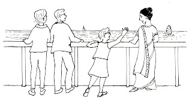
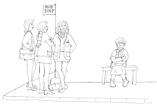
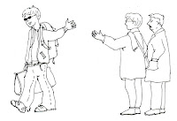
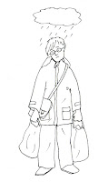
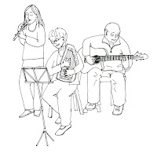
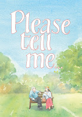
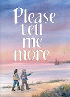

{kind=link}

{kind=link}

{kind=link}
{kind=link}
{kind=link}

{kind=link}

{kind=link}
{kind=link}
{kind=link}
{kind=link}

{kind=link}
{kind=link}
These are Claudia Myatt's drawings for the latest Golden Duck publication, Please Tell Me More -- due from the printers this week! Do they need words? I didn't think so.
Imagine they are placed in pairs at opposite corners in the bottom half of a double page spread. (The final pair are on a page together.) I'm certain that if you trusted your eyes you could read Claudia's life story here, then write / draw / pant / dictate your own, if you wished. Or you could look, with a friend at any one of the images and talk about what it felt like to start a new school, or that moment when you children left home, or that bad day at the doctors ...
But we are so used to the written instruction. "Other people won't SEE it, Julia," I was told. Please Tell Me More is a book for people with dementia and their friends / carers to create together, if they wish. Of course I wanted to make it obvious. It's the supplement to Please Tell Me which has a clear structure, prompts on every page: "Please tell me about your childhood. Where were you born? What can you remember about your parents and the other people who were close to you? What made you happy in those early years?" Weakened by the suspicion that there were people who had read my prompts for conversation in that first book as Questions that Must Be Answered, I gave in.
I cannot express the trouble I had finding the words to go with Claudia's drawings. Only people who have written for the 0-2s will understand. Here they are, finally:
Watching Dad Leaving our home
Starting a new school Dreaming impossible dreams
Starting work Wanting something more
Always drawing
A professional artist Where did the time go?
A difficult time Helped by my friends
Another new beginning But some things don't change
A frightening diagnosis How would I cope?
My friends again Life goes on
I tried chatty / personal / sententious but in the end my words are as plain as I could make them. And perhaps they do have a use, perhaps they make Claudia's story less specific to her, perhaps they will help people to think of their own homes, schools, friends, work, good times and bad -- ?
The idea of Please Tell Me More is to offer people a friendly space to do whatever they might enjoy and to extend the range of Please Tell Me. People might choose to write (or dictate) more chapters of the Life Story OR they might use it as a scrapbook and paste in a selection of favourite poems, recipes, cricket scores from times gone by. (Drawings in the top corners of every spread suggest just a few of the activities and interests that may have been essential to people's lives.) Of course anyone can buy an empty notebook or a loose leaf file but we all know how scary blank paper can be. These pages are to assist people to make a start, or simply enjoy the idea of having a project, something to do. It's about process not product and IF I had my way (no again) I'd be handing out sets of colouring pencils with every copy.
{kind=link}

{kind=link}

Files for Please Tell Me and Please Tell Me More will be available for anyone to download, free, from the John's Campaign website. www.johnscampaign.org.uk
This has been made possible by the generosity of sponsors and the help of the Debenham Project. Printed copies will be available from me (Julia) or the Debenham Project for cost price £1.50 (+ p&p) and from bookshops / Amazon £3.99
{kind=link}